Setting up your program - configuration
For event organisersNot an organiser?
The conference program is a great tool for publishing a conference program or schedule. This article will help you get set up and shows you how to add content, dates, columns, locations, chairs, presentation types and tracks.#
NB: Some of the features listed below will not be available in the Standard Conference Package.
Please note: If you do not see this page, it just means you have to use the homepage instead.
Read this Knowledge Base Article for instructions on how to create your conference homepage.
Go to Event dashboard → Conference → Program → Builder
The Program Builder screen will open. This is the space where you create your program. You will see a default session in place to get you started. The date will be taken from Event details.
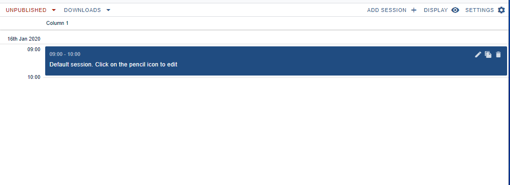
You can begin by editing the session or adding a new one but it's advisable that you enter some basic information - including dates, columns (both mandatory), locations, chairs, tracks and presentations types (all optional). Click on Settings in the top right corner to access the control panel for these.
NB: Some of these options might not be included if you have the Standard Conference package.
Sessions settings#
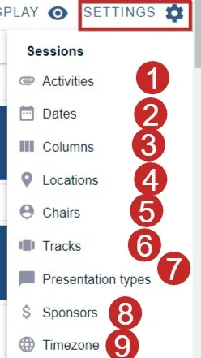
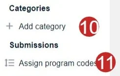
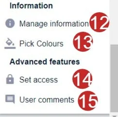
1) Activities
Activities are additional non-abstract items that you might add to a session, eg a coffee break, or a Q and A session.
Enter a title and a description and click add.
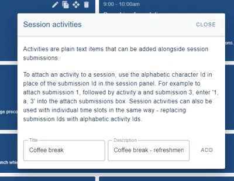
The activity will be assigned a letter, which will be an option when adding abstracts to sessions.
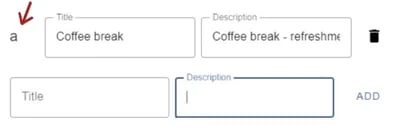
Continue adding activities as required. Click close when finished.
2) Dates
Click in the date field and choose your date (s) from the date picker. As mentioned above, the first date of your conference will be included in the program builder page.
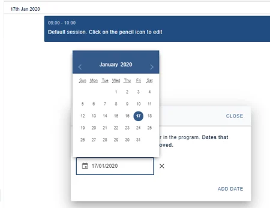
The date will appear on your screen.
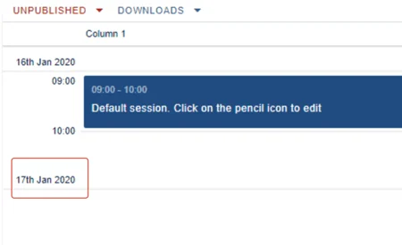
3) Columns
You can overwrite the name of the default column, if you wish.
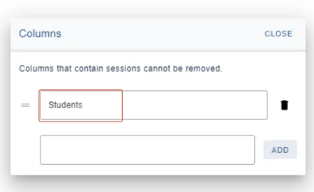
You can set up others by adding the name of the column in the empty field and click Add (You can also delete dates and columns but not if there are sessions in them. You will need to remove these first.)
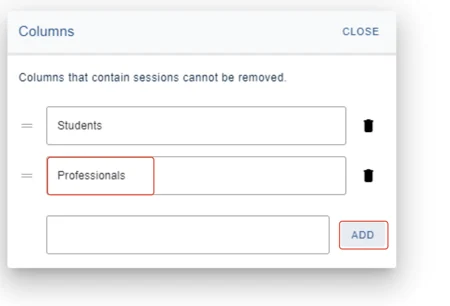
Your column(s) will then appear in the program.
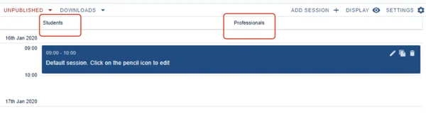
If you would like the columns to reflect your locations, see below, under Locations.
You can now start creating sessions should you wish, but it is recommended that you set up the remaining information before you proceed.
4) Locations
You can choose to change the label of Locations, by overwriting the field where Label text is written.
If you wish your locations to be reflected in the column headers, use the toggle below.
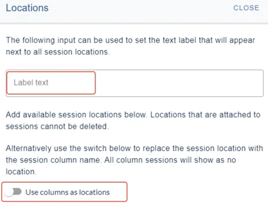
If you would prefer the columns independently of location, add your first location in the empty field and click Add
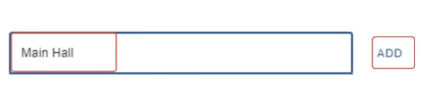
Click Closewhen you are done
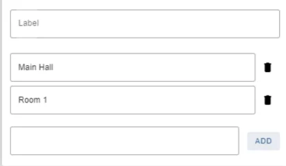
Once you have set up the mandatory information, every time you click ADD SESSION
You will see the locations appear when you click on the down arrow in the locations field. You can add them individually, or to both.
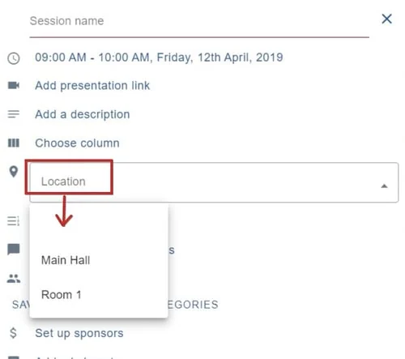
5) Chairs
There are two tabs: 1) Chairs and 2) Fields
You can choose to change the label of 3) Chairs , if you wish by overwriting this field.
Click on Fields(see below) to determine the visibility of the fields (in the example below, the fields are title, first name and last name). If you wish to add more, see Fields below.
4) Complete the fields for your chair(s)
Click the blue button at the end of this panel to continue adding chairs.
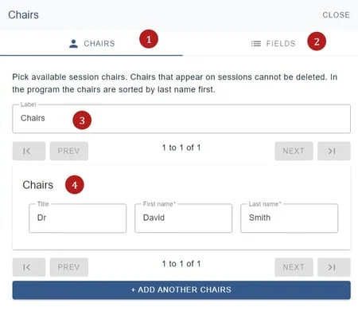
You can also delete any Chairs, by clicking on the bin icon, but not if they appear in sessions.
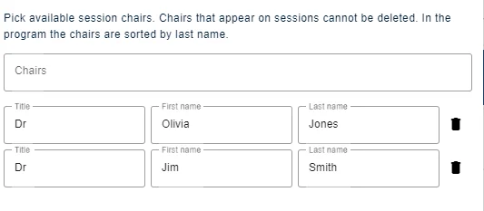
Fields#
The fields work in the same way as the Authors and affiliations question.
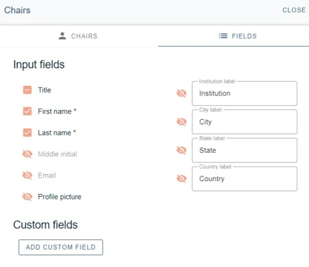
When you click ADD SESSION you will see the Chairs appear when you click on the down arrow in the Choose session chairs field. You can choose multiple chairs, if required.
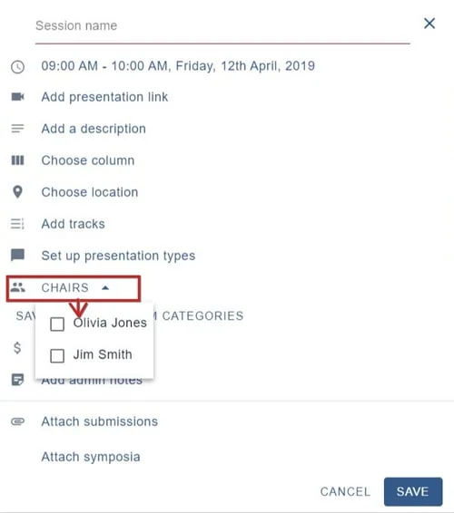
6) Tracks
Tracks is where you'll add sessions into chosen categories.
To do this: Change the label, if required (1), and enter your tracks in the empty fields (2) and, and click Add
You also have the option to automatically add the submission categories in your form (3).
You can also delete any Tracks, by clicking on the bin icon, but not if they appear in sessions.
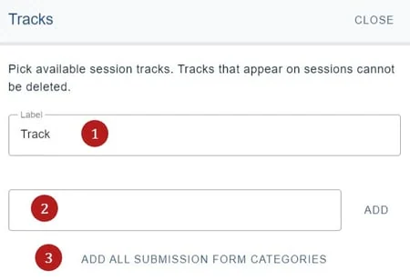
7) Presentation types
NB: Although presentation types are assigned in the submission form, they will need to be added to the program because the presentation type applies to the session, not an individual submission.
Change the label, if required, and enter your Presentation types in the empty fields, and click Add.
You can also delete any by clicking on the bin icon, but not if they appear in sessions.
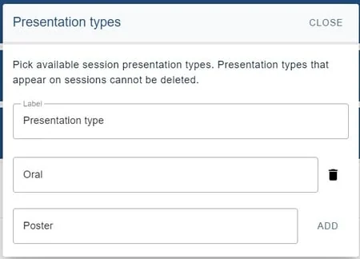
9) Timezones
For guidance on assigning time zones, see here.
10) Add category
At the top of the program, your delegates will see several properties they can filter by.
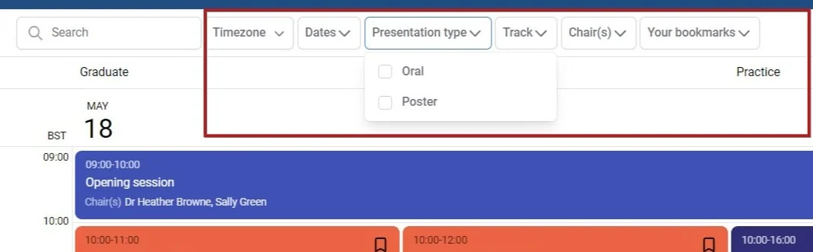
You may want to add your own category - for instance - if you are hosting a multi-site hybrid conference and you would like delegates to filter by 'live' and 'virtual' events.
Enter your custom category type in the empty field. Then add the options, ensuring you click Add after entering the options in the fields shown below.
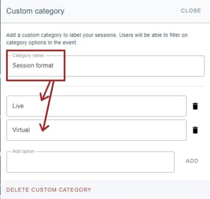
When you click on a session, you can add the custom category option.
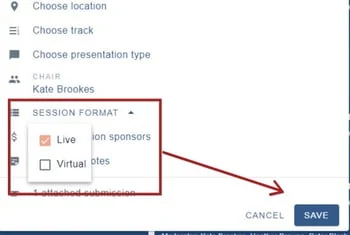
In the program, the new category will appear as a new filter option.
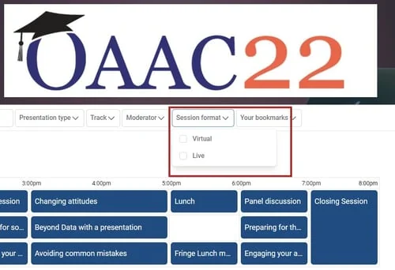
11) Program codes
For guidance on assigning program codes, see here.
12) Manage Information
If you require to add any further information, then you can do so by clicking on the Manage Information tab on the Settings column and completing the following boxes.
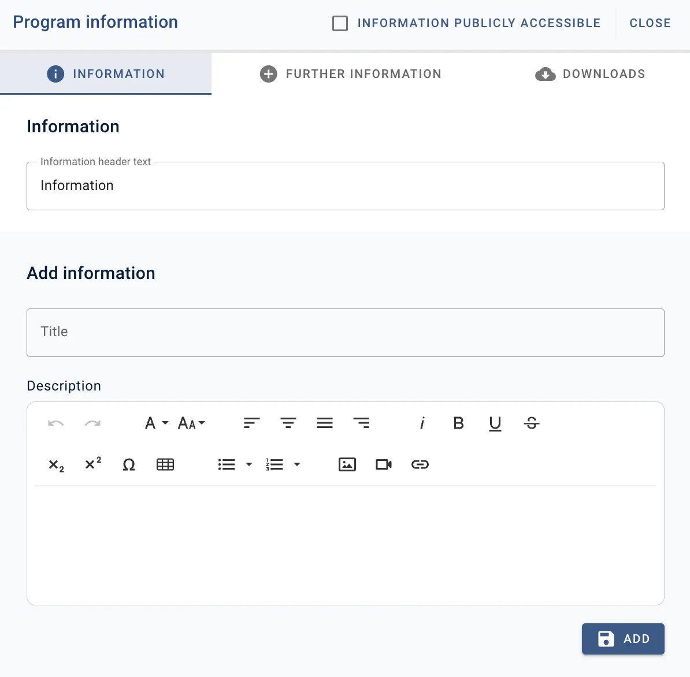
13) Pick Colours
 Here you can choose what colours you want your program builder to display.
Here you can choose what colours you want your program builder to display.
You click on one of the colours displayed or add your organisations specific colours clicking on the colour palette icon (1) to add your hex colour numbers.
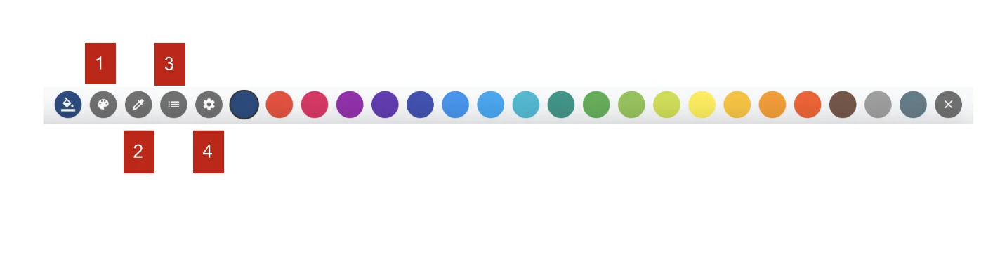
Select the paint selector icon (2) to pick a colour from anywhere on your screen and click on the session you would like to make that colour.Click the bullet point symbol (3) to select which sessions you would like to change colour.
The settings symbol (4) allows you to pick track colours and presentation type colours.
14) Set Access
Here you can choose what people can see, whether that's making everything public or you can restrict what is available to be viewed and by whom.
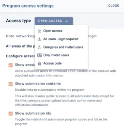
.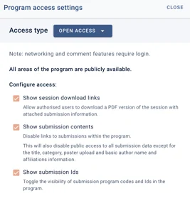
15) User Comments
Here you can decide if comments can be viewed or hidden, by clicking on the arrow under each title and selecting your preference.
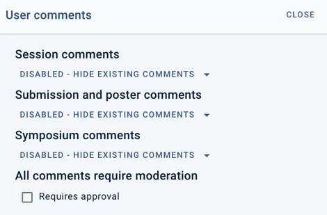
Didn't solve it? Ask our support team
No question is too small, and there's no charge for asking. Raise a ticket and someone who knows the software will pick it up.
Did this page solve it?
Thanks — this helps us fix it.